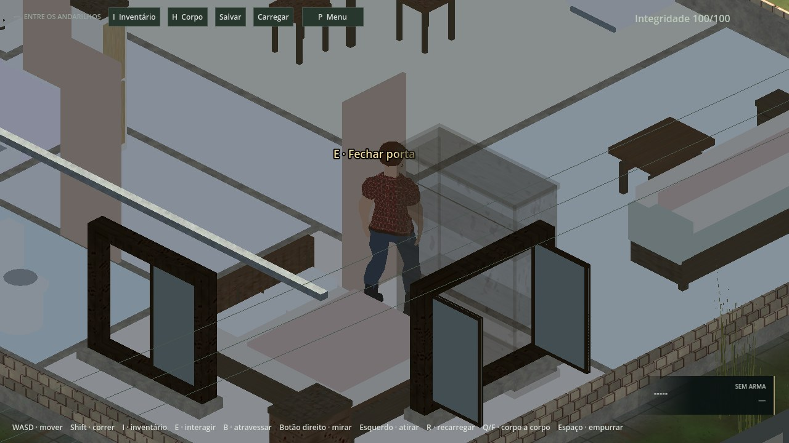

R113 · Porta e janela da H01
Recuo automático para liberar a folha da porta. Janela 04 atravessável nos dois sentidos, com alinhamento e trajetória lateral validados.
Relatório e limites · Verificações · Proteções e cercas
Próxima frente: otimização.
Porta aberta com recuo automático
